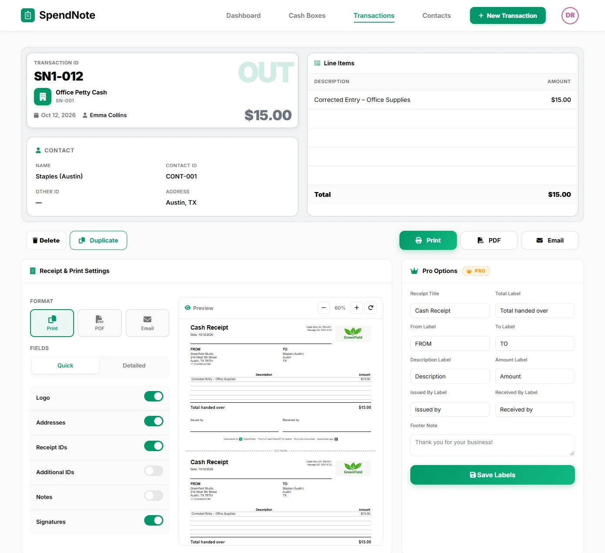

Petty Cash Security Tips
10 practical measures to prevent theft, stop shortages before they start, and keep your petty cash fund safe and accountable.

How Do You Keep Petty Cash Secure?
Keep petty cash secure by storing it in a locked box with one designated custodian, requiring a signed receipt for every withdrawal, and reconciling the balance regularly. Security comes from consistent habits, not expensive equipment: limit who has access, document every movement, and count often enough that any shortage shows up within days — not months. Lock down your cash trail free →
Why Petty Cash Security Matters
Petty cash is the easiest money in your business to steal. It is physical, portable, and often poorly tracked. A missing $20 bill does not trigger a bank alert. There is no credit card statement to review. If the controls are weak, small amounts disappear steadily and nobody notices until the fund is hundreds of dollars short.
The good news: petty cash security does not require expensive systems. It requires habits — consistent, non-negotiable habits that make theft difficult and detection immediate.
The 10 Rules
1. Always Lock the Box
This sounds obvious, but “I’ll lock it later” is how most shortages begin. The cash box is locked every time the custodian walks away — even for a bathroom break. No exceptions. If the lock is broken or the key is lost, the box is out of service until it is replaced.
2. One Custodian, One Key
Exactly one person controls the petty cash box. They have the only working key. A sealed backup key stays with the owner or manager for emergencies. If two or more people routinely access the box, accountability is impossible — when $30 goes missing, everyone points at everyone else.
3. No Cash Out Without a Receipt
Every single disbursement requires documentation before the cash leaves the box. Not after. Not “I’ll bring the receipt tomorrow.” If the recipient cannot produce a receipt, they fill out a voucher slip on the spot. No receipt, no cash.
4. Count Cash at Least Weekly
Physical cash count plus receipts should equal the starting balance. Do this every week at minimum — daily is better. A five-minute count catches problems within hours instead of weeks. See reconciliation guide for the step-by-step process.
5. Run Surprise Audits
Scheduled reconciliations are necessary but predictable. Someone who skims cash learns the schedule and replaces the money before count day. Unannounced spot checks — even once a month — eliminate that loophole. The owner or a second manager should do these, not the custodian.
6. Keep the Float Low
The more cash in the box, the higher the risk. If your team spends $80 per week, a $200 float is plenty. Keeping $1,000 “just in case” creates temptation and increases your loss if something goes wrong. Review and right-size the float every quarter.
7. Ban IOUs and Borrowing
Petty cash is not a personal lending fund. “I’ll put it back Friday” is the start of an unrecoverable shortage. If someone needs an advance, it goes through payroll or management — not through the cash box. Write this into your petty cash policy explicitly.
8. Use Two-Person Counts for Replenishment
When the fund is replenished, two people should verify the amount: the custodian and a second person (manager, accountant, or colleague). Both sign off on the count. This dual control prevents disputes and deters manipulation.
9. Go Digital for the Audit Trail
Paper logs can be altered, lost, or “accidentally” destroyed. A digital petty cash book creates timestamped, permanent records — transactions cannot be deleted (only voided by an admin, with the void clearly marked in history). Every entry is logged the moment it happens, with the user’s identity attached. If something goes missing, the digital trail shows exactly when and where the discrepancy started.
10. Secure the Box After Hours
During the day, the box stays with the custodian. At night, it goes into a safe, locked cabinet, or locked office — ideally with a different key than the box itself. Do not leave it on a desk overnight, even in a locked building. Cleaning crews, maintenance workers, and early arrivals all have building access.
Signed Receipts on Every Cash Movement — No Paper to Forge or Lose
Every transaction signed, timestamped, attributed — both sides keep a copy. Full digital audit trail. Free to start, no credit card.
Start Receipt-Logging NowPetty Cash Internal Controls
Internal controls are the rules and procedures that prevent petty cash from being misused. They do not require expensive software or complex policies. The foundation is simple: separation of duties, mandatory documentation, and regular verification.
The key internal controls for petty cash:
- Segregation of duties — the person who approves a disbursement should not be the same person who hands out the cash. If your team is too small for full segregation, compensate with more frequent audits.
- Mandatory documentation — no cash leaves the box without a receipt or voucher. No exceptions, no “I’ll bring it later.”
- Regular reconciliation — cash + receipts must equal the float at all times. Count weekly at minimum.
- Transaction limits — set a per-transaction maximum (typically $50–$75). Anything above goes through normal purchasing.
- Management oversight — someone other than the custodian reviews the log and performs surprise counts.
Petty Cash Security Policy Example
Here is a sample security policy paragraph you can adapt for your team:
Policy: All petty cash disbursements require a receipt or completed voucher slip before cash is released. The custodian must log every transaction immediately, including date, amount, recipient, and purpose. No IOUs, personal loans, or undocumented withdrawals are permitted.
The cash box must remain locked at all times when not in active use. Only the designated custodian holds a working key. A sealed backup key is stored with the business owner.
The custodian shall perform a full cash count at the end of each business day. A manager or owner shall conduct an unannounced verification count at least once per month. Any discrepancy exceeding $5 must be reported to management immediately and documented in writing.
Petty Cash Fraud Examples
Understanding how fraud actually happens helps you design controls that prevent it. These are the most common petty cash fraud schemes:
| Fraud Type | How It Works | How to Prevent It |
|---|---|---|
| Skimming | Custodian takes small amounts ($5–$20) without logging them, hoping nobody counts. | Daily cash counts and surprise audits. |
| Fake receipts | Someone submits a receipt for a purchase that never happened, pockets the cash. | Require original receipts only. Cross-check vendor names and dates. |
| Inflated amounts | Receipt says $12 but the custodian logs $20 and keeps the $8 difference. | Staple original receipts to the log entry. Second person reviews. |
| Ghost employees | Disbursements logged to people who do not exist or did not receive cash. | Require recipient signature on every voucher. |
| IOU abuse | Custodian “borrows” cash with the intention of returning it but never does. | Ban all IOUs in the written policy. Zero tolerance. |
Most petty cash fraud is opportunistic, not planned. Strong controls remove the opportunity.
Warning Signs That Security Has Failed
If you see any of these, your controls need immediate attention:
- Persistent small shortages — $5 here, $10 there, every single week. This is the classic pattern of gradual theft.
- Receipts for round-dollar amounts — real purchases rarely come to exactly $20.00 or $50.00. Round numbers on receipts suggest fabrication.
- The same “lost receipt” excuse repeatedly — once is careless, twice is a pattern, three times is a problem.
- Custodian resists audits or counts — if the person managing the box gets defensive about verification, that is a red flag.
- Cash box found unlocked — even once. If it happened once when you noticed, it has happened many times when you did not.
- Multiple people “helping” with the box — the custodian system has eroded and accountability is gone.
When these signs appear, do not wait. Conduct a full reconciliation immediately, review the policy, and reassign the custodian if necessary.
Security Checklist Summary
- Cash box is always locked when unattended
- One custodian holds the only working key
- Every disbursement has a receipt or voucher
- Cash is counted weekly (or daily)
- Surprise audits happen at least monthly
- Float is sized to actual spending, not “just in case”
- IOUs and personal borrowing are banned
- Replenishments are verified by two people
- Transactions are logged digitally with timestamps
- Box is stored in a safe or locked cabinet overnight
Important: SpendNote is for internal cash tracking and receipt generation. It does not replace your accounting software, insurance, or legal compliance requirements. For suspected fraud or theft, consult your legal advisor.
Frequently Asked Questions
How do I know if someone is stealing from petty cash?
The clearest sign is a persistent shortage that cannot be explained by receipts. If the cash count is consistently lower than what the log says it should be, someone is taking money without documenting it. Other red flags: missing receipts for round-dollar amounts, the same person always reporting “lost” receipts, and resistance to surprise audits.
How often should I count petty cash?
At minimum, once a week. Many businesses count daily — it takes less than five minutes and catches problems immediately. The longer you wait between counts, the harder it is to trace a shortage back to a specific transaction or person.
Should I use a camera near the petty cash box?
A camera is a deterrent, but it is not a substitute for good controls. Locked storage, a single custodian, mandatory receipts, and regular reconciliation prevent more theft than cameras do. If you add a camera, make sure staff know it is there — the deterrent effect only works if people are aware of it.
What is the safest way to store petty cash overnight?
In a locked cash box inside a bolted safe or locked cabinet. Do not leave the box on a desk, counter, or in an unlocked drawer overnight. The less cash left in the box over non-business hours, the better — replenish at the start of the next business day instead.
Try everything. Pay nothing for 14 days.
Then, if you love it
- Unlimited receipts and cash boxes
- Your logo on every receipt
- Print, PDF & CSV export
- Daily cash report with cash count
Every cash handoff, recorded and signed.
Set up in two minutes. First receipt in thirty seconds. Every entry saved and searchable.
Start my free trial